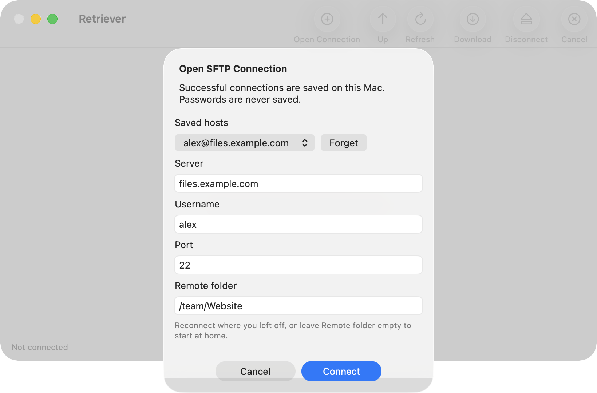
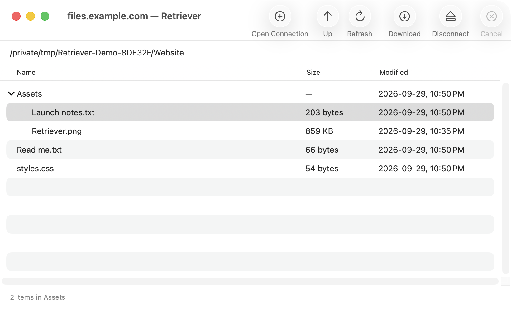
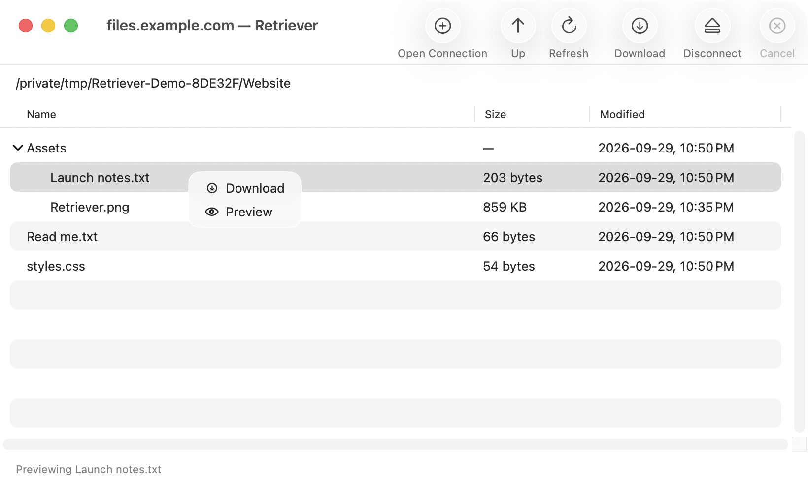
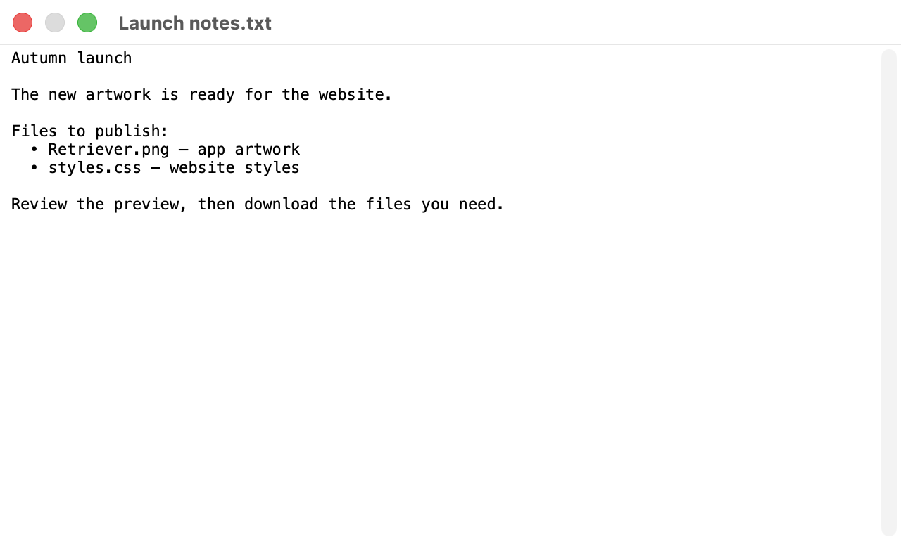

Pick up where you left off.
Return to saved servers, expand folders in place, and preview files before downloading.
Screenshots use sample connection details and files.
Saved hosts and folders
- Successful connections are saved automatically with each host’s last visited folder.
- Choose a saved host in Open Connection, edit its starting folder, or use Forget to remove it.
- If a saved folder is unavailable, Retriever opens the server’s home folder and shows a notice.
- Passwords are never saved. Retriever does not connect automatically when it starts.

Browse an expandable file tree
- Click a folder’s arrow to expand or collapse it within the file list.
- Browse nested folders and download their files without leaving the current directory.
- Larger disclosure arrows and vertically centered labels make rows easier to read.

Preview from the context menu
- Right-click a file for Download or Preview.
- Download opens the existing macOS Save dialog.
- Preview retrieves a temporary copy and displays it in native Quick Look.
- Temporary preview files are removed when the preview closes, is replaced, or the app quits. Preview downloads can be cancelled.


A consistent app icon
- The Dock and About panel show the Retriever icon with a rounded tile and transparent outer corners.
Requires macOS 14 or later. FTP, uploads, folder downloads, and symbolic-link downloads remain unsupported.